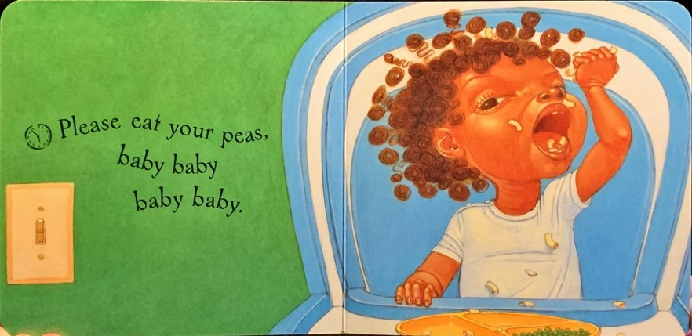

After looking for picture books to analyze, my thorough search yielded only four books that I found acceptable: Please, Baby, Please and Please, Puppy, Please, both co-written by Tonya Lewis Lee and Spike Lee; Honey Baby Sugar Child by Alice Faye Duncan; and Flossie and the Fox by Patricia C. McKissack. These books had many similarities, and they were the reason I felt confident giving them to my students. The books are traditional picture books, short enough to keep a young child’s attention; they feature a black child or family in a progressive, non-biased way; they are written by a person of color who knows the dialect; and they feature AAE or the cadence associated with AAE not only in dialogue, but in narration as well, elevating the dialect in the story to that of MAE.
The Lees’ books—Please, Baby, Please (2002) and Please, Puppy, Please (2005) do not feature words or spellings that are specific to AAE; but both are written with a cadence that echoes the rhythm of black poetry and AAE. Both feature small lines of text on each page that curve according to the intonation the reader is to place on each syllable. While the books are similar in content, they are much different in execution.
Please, Baby, Please is published as a classic board book, designed for both durability and the elimination of noise during reading, making it optimal for a bedtime story. The story centers on a mother pleading with her daughter to stop being so rambunctious. Each page contains half of a rhyming pattern that ends with a plea featuring some combination of please and baby. The phrase preceding the tagline is typically very alliterative, featuring a repetition of the alveolar [s], such as in the phrases “please eat your peas” and “don’t be so slow.” The phrases also feature repetitions of voiced and unvoiced bilabial stops, such as in the phrases “go back to bed” and in the reprise of the phrase “please, baby, baby, please” or other combinations of those words. The repetition of sound to give emphasis to certain points, or the sounds themselves, is associated with black poetry (Stoudamire 59). The authors are very deliberate in their use of [s] and bilabial stops [b] and [p] to soothe young listeners and help them relax before bed.

The Lees’ second book, Please, Puppy, Please complements its predecessor. Although the structure imitates the Lee’s first book—specifically in the repetition of phrases—the story line involves two young children whose difficulty in keeping the attention of their new puppy easily demands the attention of its readers. The phrases preceding the tagline of “please puppy please” consist of commands to correct the puppy’s behavior, such as “Not the mud, puppy! Oh no!” and “Get back in the tub!” which are displayed on bright scenes illustrating the puppy doing something mischievous. While the consonance of the Lees’ first book is missing from this book, the words meant to be emphasized are larger than their surrounding sentence, giving the book the same cadence of Please, Baby, Please. The lines are arranged in a rhyming pattern, adhering to the standard for most picture books. Although these two books do not feature AAE directly, the writing follows the structure of standard black poetry, using its cadence and rhythm to reflect the dialect of its characters and the authors themselves. Likewise, the children narrating the story imitate the way the mother speaks in Please, Baby, Please, reinforcing the importance of learned diction and dialect.